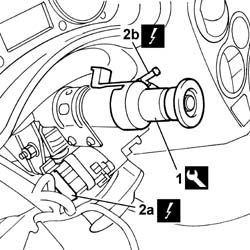
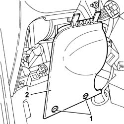
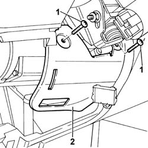
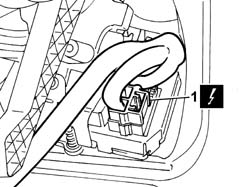
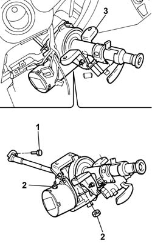

4110D20 steering electrical control device - r r
- Path
- Procedures > 41 STEERING > 4110 STEERING CONTROL AND LINKAGE > 4110D steering electrical control system > 4110D20 steering electrical control device - r r
- Kind
- repair procedure (removal / refitting; the operation number is the code)
- Applies to
- all engines; all production periods
- Interactive page
- https://sloeber94.github.io/elrnDB-fPnd/en/#/2752786
Applies to: all engines; all production periods
 Removing
Removing
 Refitting
RefittingDisconnect the battery negative terminal.
4110A10 steering wheel - r+r for replacement or checks
7040A26 steering column trim - r+r
5550A10 stalk unit assembly - r+r
1. Position the locking tool and reference on the steering column.
 | Name | Country |
|---|---|---|
1 | Bush | 1.870.761.000 |
2. Disconnect the electrical connections (2a) and (2b) from the ignition switch.
 | Name | Connector |
|---|---|---|
2a | Ignition switch | H1A |
| Name | Connector |
|---|---|---|
2a | Ignition switch | H1B |
| Name | Connector |
|---|---|---|
2b | Aerial for Fiat-CODE | P91 |

Applies to: all engines; all production periods
1. Undo the retaining bolts.
2. Remove the fuse box access cover.

Applies to: all engines; all production periods
1. Undo the retaining bolts.
2. Remove the electric steering device metal protection.

Applies to: all engines; all production periods
1. Disconnect the electrical connections from the electric steering control unit.
| Name | Connector |
|---|---|---|
1 | Electric steering control unit | M86A |
| Name | Connector |
|---|---|---|
1 | Electric steering control unit | M86B |

Applies to: all engines; all production periods
1. Undo the bolt securing the steering column to the steering box.
2. Undo the bolts and nuts securing the electric steering mounting to the body.
3. Remove the electric steering assembly with steering column.

Applies to: all engines; all production periods
Refitting
RemovingFit the electric steering assembly in its seating.
Tighten the bolts and nuts securing the electric steering mounting to the body to torque.
 | Fastening | Component | Ø | Value (daNm) |
|---|---|---|---|---|
- | Bolt | STEERING ELECTRIC CONTROL DEVICE | M8 | 1.5 |
| Fastening | Component | Ø | Value (daNm) |
|---|---|---|---|---|
- | Nut | STEERING ELECTRIC CONTROL DEVICE | M8 | 1.5 |
Tighten to torque the bolt securing the electric steering mounting to the steering box.
| Fastening | Component | Ø | Value (daNm) |
|---|---|---|---|---|
- | Bolt | STEERING SHAFT JOINT FASTENERS | M8 | 3.2 ÷ 4.2 |
Connect the electrical connections to the electric steering control unit.
| Name | Connector |
|---|---|---|
- | Electric steering control unit | M86A |
| Name | Connector |
|---|---|---|
- | Electric steering control unit | M86B |
Fit the electric steering device metal protection and tighten the bolts.
Fit the fuse box access cover.
Connect the electrical connections for the ignition switch.
| Name | Connector |
|---|---|---|
- | Ignition switch | H1A |
| Name | Connector |
|---|---|---|
- | Ignition switch | H1B |
| Name | Connector |
|---|---|---|
- | Aerial for Fiat-CODE | P91 |
Remove the locking tool and reference previously positioned on the the steering column.
| Name | Country |
|---|---|---|
- | Bush | 1.870.761.000 |
5550A10 stalk unit assembly - r+r
7040A26 steering column trim - r+r
4110A10 steering wheel - r+r for replacement or checks
Connect the battery terminals.
Check the operation of the Air Bag system using the Examiner or other diagnostic equipment.
Topics linked from this page (4)
- 4110A10 steering wheel - r+r for replacement or checks
- 5550A10 stalk unit assembly - r+r
- 5580C18 air bag module - r+r
- 7040A26 steering column trim - r+r